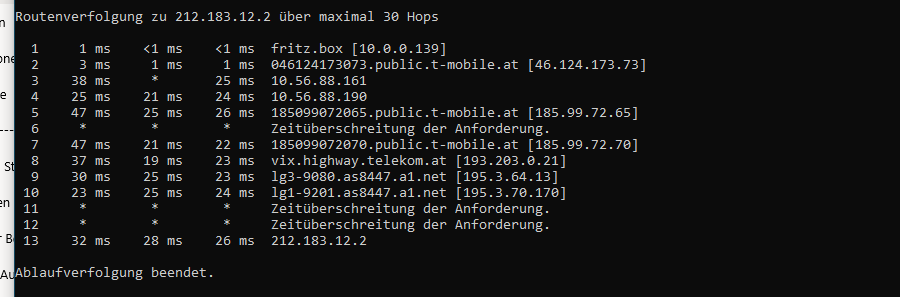

Hallo Liebe Communitiy,
vielleicht hat von euch jemand noch eine Idee.
Wenn ich über mein Internet zuhause (Zyxel NR7101 wo die Magenta SIm drinnen ist - dieser im Bridge Mode - und dahinter Frritzbox die auch DHCP und co spielt) mich zu meinem Firmen VPN einwählen will, klappt das nicht.
Auch wenn ich die IP Tracroute, sehe ich immer wieder das ich gewisse timeouts bekomme.
Internetsurfen und auch Zugriff von außen auf meine Smart-Home Geräte etc. funktioniert alles perfekt - habe also die NAT Settings auf Businessgprs usw. schon alles geändet.
Hat von euch jemand eine Idee woran das liegen kann? habs auch direkt mit dem PC am NR7101 probiert, selbiges ergebnis - d.h. es liegt sicher nicht an der Fritzbox und ich denke auch nicht am NR7101, da ist firewall etc. alles deaktiviert und NAT Probleme sehe ich jetzt auch nicht direkt?

Im übrigen, bin in der Firma in der IT, d.h. ich kann 100% davon ausgehen das der VPN Serviceläuft und funktioniert, da sind täglich doch ein paar hundert User verbunden

Danke für eure Hilfe - die Hotline sagt mir leider nur immer das der NR7101 nicht von Ihnen ist und somit kein Support - ich brauch jedoch einen Outdoor Router sonst ist der Empfang zu schlecht im Gebäude